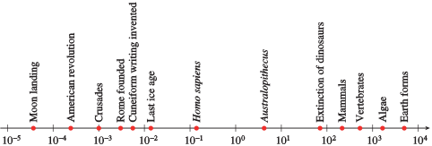
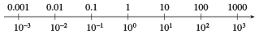
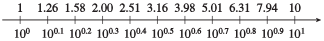
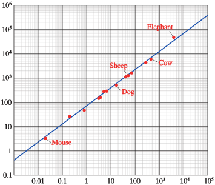
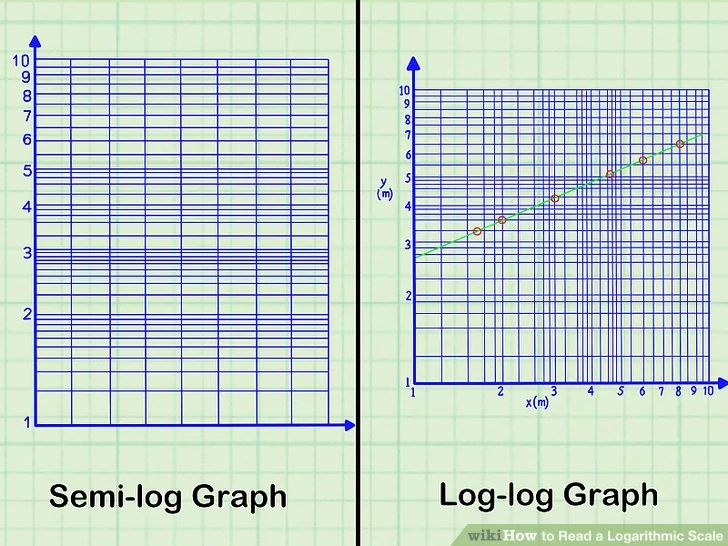

I haven’t been going over the exercises. But I want to make clear that class is an appropriate place to talk about them:
Things that made no sense.
Things that you’re shakey on.
Need a review.
14.1 Logarithms and digits
14.1.1 The “digits()” function
I used the name digits() for my function. But maybe, since scientific notation is a familiar in-between form, I should rely on that notation. In \[6.32 \times 10^{31}\]
31 is the exponent, 6.32 is the mantissa (and 10 is the base). Our goal with the digits function is to move the information from the mantissa into the exponent. That is, formally, we’ll use 1 as the mantissa, and allow fractional exponents so to record what previously was spread between the original mantissa and the original exponent. For instance: you can confirm that
\[6.32 \times 10^{31} = 1 \times 10^{31.80072}\]
Written this way, with the formal 1 mantissa, we read off the digits from the exponent. So, digits(\(3.2 \times 10^{31}\)) is 31.80072.
Now, journey back historically to about 1580, before Napier’s invention of the logarithm. We are going to scoop Napier, but with the advantage of modern computing.
Our goal is to create a digits() function that for input 10 will give output 1, for input 100 will give output 2, and so on. Or, as a table:
input
output
1
0
10
1
100
2
1000
3
We need to figure out what the output should be for an input like 3 or 59.
Since multiplying the input by 10 raises the output by 1, we can imagine that multiplying the input by \(\sqrt{10}\) will raise the output by 1/2.
From ancient times, mathematicians knew how to compute the output of the sqrt() function. (We’ll see how to do this by Newton’s method in Block 3, but there is older methods, such as the Babylonian. By iteratively computing square roots we can get decimal format versions of \(\sqrt[16]{10}\) or even \(\sqrt[256]{10}\). Also, from ancient times, mathematicians could multiply numbers. Thus, even if tedious, we can calculate the decimal version of, say \(10^{17/128}\), which turns out to be 1.357727. That is, \(10^{17/128}\) has 1.357727 digits!
Let’s make a lot of such numbers. The R code is not something you need to worry about.
Some historical events as they are spaced over time. When there is no characteristic “scale” (e.g., a presidential term, a decade, a century), graphing the log is the way to go!

historical events spaced in time
Figure 1: Historical events spaced in time. Units are millions of years. Source: Katherine Yoshiwara Modeling, Functions, and Graphs
Typically on a log scale such as Figure 1, the tick marks are evenly spaced and it is only the labels that show that the logarithm is being plotted. Usually the labels are given in decimal notation, as in the top scale in Figure 2. But, as you know, the labels on the bottom scale are exactly equivalent, although written in scientific notation.

Figure 2: Exponentially spaced numbers plotted along a ruler. The bottom labels show the numbers in scientific notation. If you want to see the logarithm instead, simply look at the exponent in the scientific notation label. Source: Katherine Yoshiwara Modeling, Functions, and Graphs
If you use finer divisions between numbers than the factor-of-10 used in Figure 2, the decimal notation and scientific notation numbers don’t match so prettily.

Figure 3: We can use steps smaller than the base of the log. Here the step is 0.1 log unit as opposed to the 1.0 log unit in Figure 2, the decimal equivalent of the log value seems bizarrely uneven. Source: Katherine Yoshiwara Modeling, Functions, and Graphs
Most people are more comfortable with labels where the information is not squirreled up in the exponent, but displayed as round numbers as in #fig-labelled-1. To accomplish this, whenever ticks are spaced by smaller than a log unit, they end up being unevenly spaced.
Sometimes, as in Figure 4, only the occasional grid line is labelled, but the intermediate, unlabelled grid lines are unevenly spaced even if the labels are spaced evenly.

Figure 4
Two different types of logarithmically labelled graphs are in wide use, as in Figure 5. Semi-log is appropriate when only one variable is “scaleless.” Log-log is when both variables are without a characteristic scale.

Figure 5: Two types of logarithmically spaced graph paper for plotting one variable against another.
EXERCISES:
Label the intermediate (unlabelled) ticks on a logarithmic axis.
The Figure 5 graphs are gridded on a “decade” system, that is, 1, 2, 3, …, 10, 20, 30, … 100, 200, …. What happens if we want to use a “century” system, that is 1, …, 100, …, 10000. What would be the values on the unlabelled tick marks.
Solution:
Here are the positions of 1, 2, 3, …, 10 on the unevenly spaced ticks between decades:
We put the ticks at these positions and could write the labels either in scientific form as \[10^0, 10^{1.079181}, 10^{1.361728}, ...\] or in decimal form as :
10^(log10(seq(1, 100, length=10)))
[1] 1 12 23 34 45 56 67 78 89 100
14.2 Operations on Functions
All three of these seek a specific value for the input. That is, these operations
take a function as primary input, and a domain as an argument.
produce a quantity as output
Zero-finding
Guess two initial domain values and evaluate function at them.
Modify the state
Straddle zero? We have a bracket. Bisection or linear interpolation (Newton’s Method)
Otherwise: Move in the downhill direction until we have a bracket, then continue.
If move proves to be uphill, start with different initial values.
Return the average (or zero of the linear interpolant) of the bracketed values.
Optimization in one input
Algorithm I: Gradient descent (for minimization)
Guess two initial values
Pick a third in a downhill direction.
If the attempt to move downward results in an upward movement, now you have a bracket.
Algorithm II: Newton’s method for minimization (or maximization)
Guess three initial domain values and evaluate function at them.
Fit a quadratic to the three points and find its argmin (or argmax)
Choose the closest two of the initial values to the value in (ii) and repeat.
Stupid calculus algorithm: Differentiate objective function and find the zero crossing.
Bad because you need many function evaluations. In practice, you need a formula for the objective function to create the derivative without large number of function evaluations.
For functions of multiple inputs,
Zero finding follows a similar strategy.
Optimization requires new concepts from calculus that we will start to talk about after break.
Iteration. Take a function and a state. Evaluate the function on the state to create a new state, and so on ….
State is one value: a dynamical system or Newton’s method
Sometimes a state is a bracket.
14.2.1 Examples
In each of the following code chunks, I am creating a randomly shaped function and operating on it. I might get zero or one or more rows.
14.2.1.1 Zero-finding example:
14.2.1.2 Optimization example:
14.3 Magnitude
Scientific notation makes it easier to write very big or very small quantities.
Mass of the electron: 9.1093837 × 10-31 kilograms
Avogadro’s number: 6.023 x 1023 (molecules per mol) 6.6743 × 10-11 m3 kg-1 s-2
Sometimes we need to work in settings that include a huge range of relative sizes. Here’s a table of internal combustion engines of various sizes.
DT::datatable(Engines)
14.3.1 Counting digits
14.3.2 Computing via the axes
14.3.2.1 Linear axes
This graph will not be informative about the engines.
14.3.2.2 Semi-log axes
14.3.2.3 Log-log axes
Using a ruler and a printed logarithmic scale
14.4 Units and Dimensions
Think about the kinds of physical things, e.g. velocity, force, frequency, energy, power.
We start out with an abstract sense of these, e.g. what’s the difference between force and velocity, or between energy and power.
We have a notation that enables us to construct any kind of thing by putting together powers of a very few general, simple kinds of thing: length, mass, time, money, ….